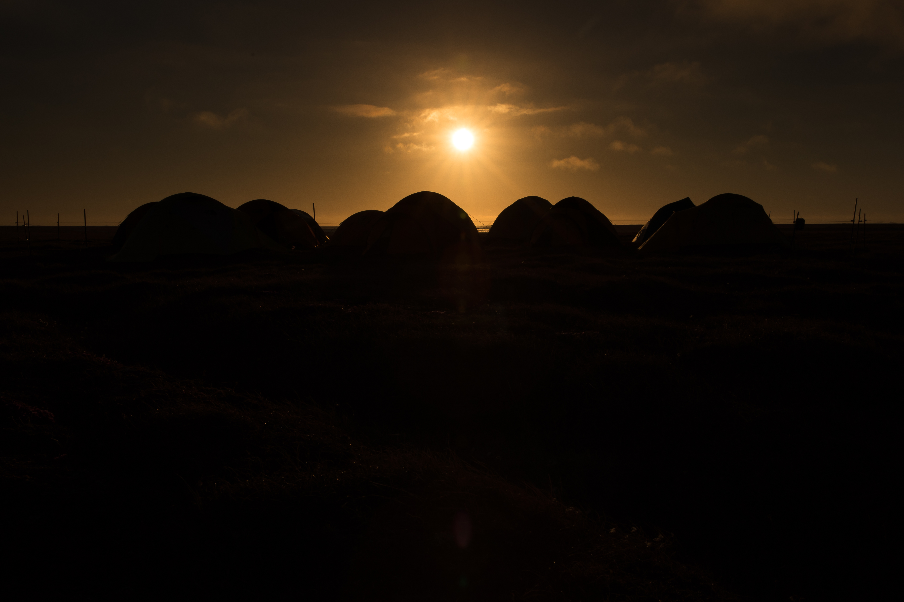

The midnight sun is a natural phenomenon in which the Sun remains continuously above the horizon for 24 hours or more, occurring in polar and sub-polar regions during local summer. It arises because Earth's rotation axis is tilted approximately 23.4° relative to the perpendicular of its orbital plane. During northern summer, the North Pole tilts toward the Sun, and at latitudes above the Arctic Circle (approximately 66.6° N) no part of Earth's daily rotation carries those regions into the planet's shadow — the Sun skims along the horizon but never dips below it. The same phenomenon occurs in the Southern Hemisphere six months later, at latitudes south of the Antarctic Circle (approximately 66.6° S).

Lisa Hupp / U.S. Fish and Wildlife Service (USFWS) Alaska Region
.jpg){kind=link}
The geometric condition for the midnight sun is that the observer's latitude plus the Sun's declination must equal or exceed 90°. At the summer solstice, solar declination is approximately +23.4° (northern hemisphere), so latitudes above 90° – 23.4° = 66.6° N experience at least one full night of continuous sunlight. Duration increases strongly with latitude: locations just inside the Arctic Circle see roughly one continuous day near the solstice, whereas Svalbard (approximately 78.9° N) experiences about 131 days of midnight sun. At the North Pole itself the Sun rises once at the vernal equinox and sets once at the autumnal equinox, producing a single polar day of approximately 186 days. Atmospheric refraction bends sunlight slightly over the geometric horizon, extending the midnight sun zone roughly 0.5° beyond the official Arctic Circle — explaining why Grímsey, Iceland, situated on the Arctic Circle, still records approximately 30 days of midnight sun annually.
The North and South poles experience slightly different polar day durations because Earth's orbit is elliptical. The northern polar day (approximately 186 days, from around 18 March to 24 September) coincides with aphelion, when Earth moves more slowly in its orbit and the season is correspondingly longer. The southern polar day (approximately 179 days, from around 20 September to 23 March) coincides with perihelion, when Earth moves faster, compressing the season.
A related but distinct phenomenon is white nights, which occur at latitudes between approximately 60° 34′ and the polar circles. There the Sun dips below the horizon but remains less than 6° beneath it, producing persistent civil twilight rather than true darkness. Saint Petersburg (59.9° N) experiences white nights from approximately 11 June to 1 July; the city marks the period with its annual White Nights Festival. White nights should not be confused with the midnight sun: in white nights the Sun does set, whereas the midnight sun requires the Sun to remain continuously above the horizon.
The earliest recorded description of the midnight sun comes from the ancient Greek explorer Pytheas (c. 325 BCE). During his voyage north toward a region he called Thule, he reported that at midsummer the Sun did not set, and Pytheas is also credited with first formulating the concept of the Arctic Circle. The phenomenon is experienced today across Canada, Finland, Greenland, Iceland, Norway, Russia, Sweden, and Alaska. Earth's axial tilt oscillates between approximately 22.1° and 24.5° over a cycle of roughly 41,000 years (a Milankovitch cycle); the tilt is currently decreasing, causing the Arctic and Antarctic Circles to migrate toward the poles at approximately 14 metres per year.
See also: Arctic Circle, Antarctic Circle, solstice, declination, perihelion, aphelion, polar night, vernal equinox, autumnal equinox.